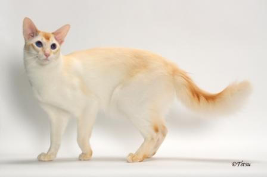

BALINESE-JAVANESE
Weight:
large: >12 lbs.
medium: 8-12 lbs.
Length:
Long.
Eye Color:
Blue.
Color:
Frost, Blue, Chocolate, Seal, Cream, Red, Lilac, Fawn.
Longevity:
8-13 yrs.
Balinese-Javanese personality
The Balinese is an active, vocal cat as befits a Siamese descendent. Cat trees and high perches are necessary equipment when you live with a Balinese. If these are not provided, the Balinese will make anything tall her own special perch her slender figure conceals a powerful jumper. You may find her leaping effortlessly to the top of your refrigerator, bookcases and even the tops of doors.
What to expect
The Balinese is slender and fine boned. Because of this build, care must be taken that she does not become obese. If given enough exercise space, the Balinese is generally able to avoid getting too heavy. The Balinese is a lively but loving cat. She will sit quietly with her parent, purring and being petted. They are loving companions.
History of the Balinese-Javanese
The Siamese (Balinese?) breed has always been popular. In the early 1950s, some Siamese (Balinese?) breeders in the United States discovered that they were seeing kittens puffier than a Siamese should be. They knew that no other breed was inserted into their breeding program and that their program was sound, but they still saw these kittens with fur that was too long to meet the Siamese standard. Although the beauty of these cats was recognized, these kittens were placed as pets rather than breeding animals. However, two Siamese breeders, Helen Smith in New York and Marion Dorsey in California, fell in love with the look of the longer-haired Siamese (Balinese?) and felt that they should continue to be bred. When these breeders saw that litters of Longhairs were produced by breeding these Longhair cats to each other, they determined to promote these cats as a separate breed. They began by placing these kittens with other breeders who had similar interests in mind. Originally, the thought was to name this breed the Longhair Siamese but Siamese breeders objected. Since the naturally graceful motion of this breed made people think of the movements of the Balinese Temple Dancers, the name for the breed became Balinese.